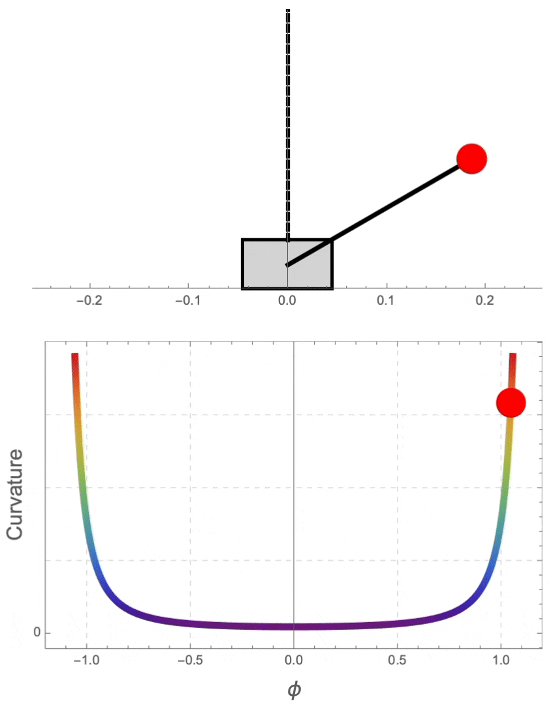
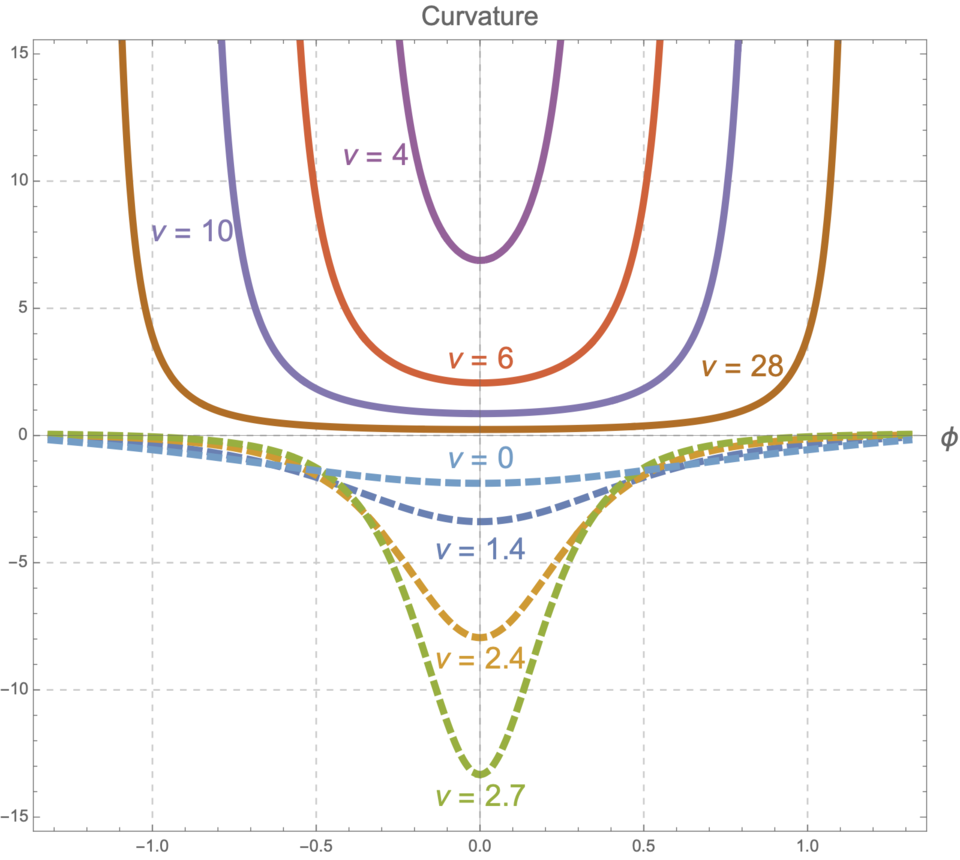

Curvature Shaping Control
|  |
受控系统的运动曲线被约束在一个曲率阱中，直观地解释了曲率阱如何吸引摆向其底部移动. It is shown that the motion curve of the closed loop system are trapped in a "curvature well". |
|  |
研究发现，当 $ \nu > M/m $ 时，出现了具有正曲率的曲率阱，随着 $ \nu $ 增加，这些“阱”变得更宽、更深. It is shown that the "curvature well" with positive curvatures appear when $ \nu > M/m $ and become wider and deeper as $ \nu $ increases within the domain. |
Stabilization of a Geometrically Exact Beam Hinged on a Cart

|
不施加控制，柔性摆在重力作用下自然下落. Uncontrolled, the flexible pendulum naturally falls under the influence of gravity. |

|
利用几何力学中新发展的场论Hamel形式，我们将受控Lagrange方法推广至无穷维力学系统，并对小车-柔性倒立摆系统构建了实时的镇定算法. By employing Hamel's formalism for infinite-dimensional mechanical systems, We have extended the CL method to infinite-dimensional mechanical systems and developed a real-time stabilization algorithm for the cart-flexible inverted pendulum system. |